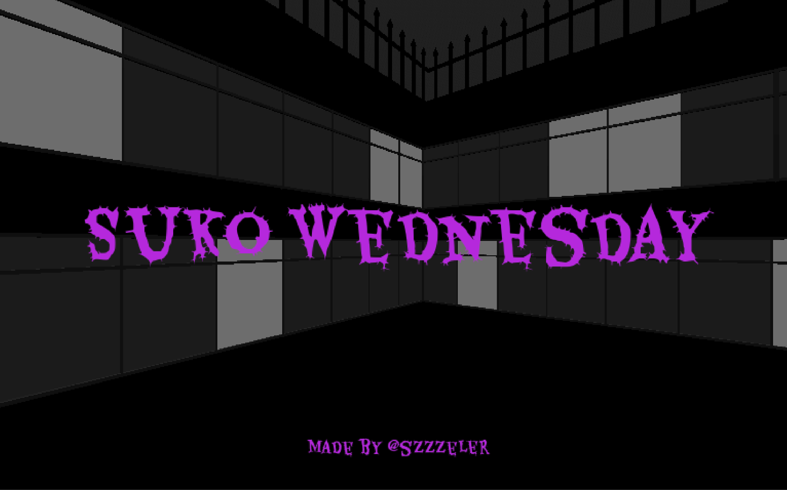
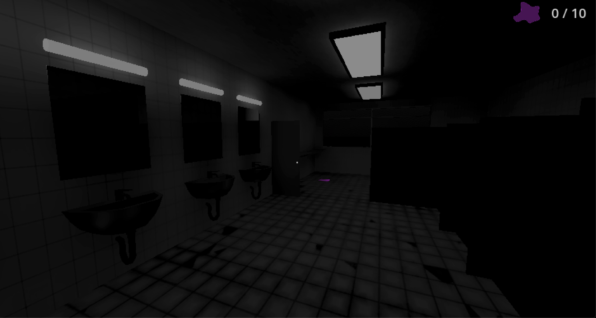
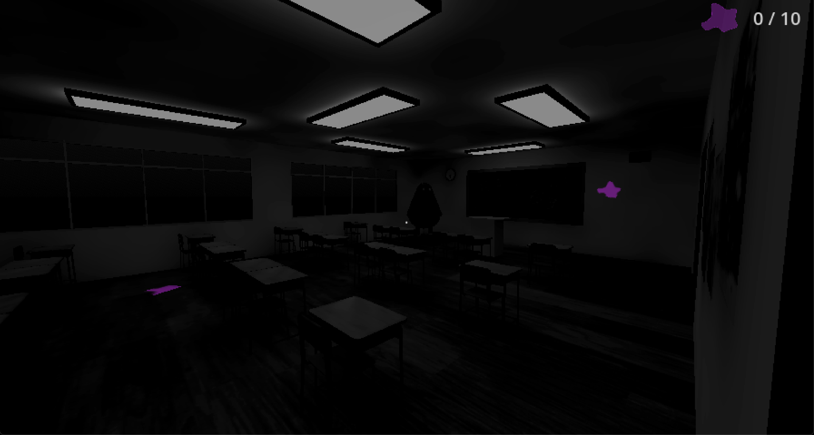
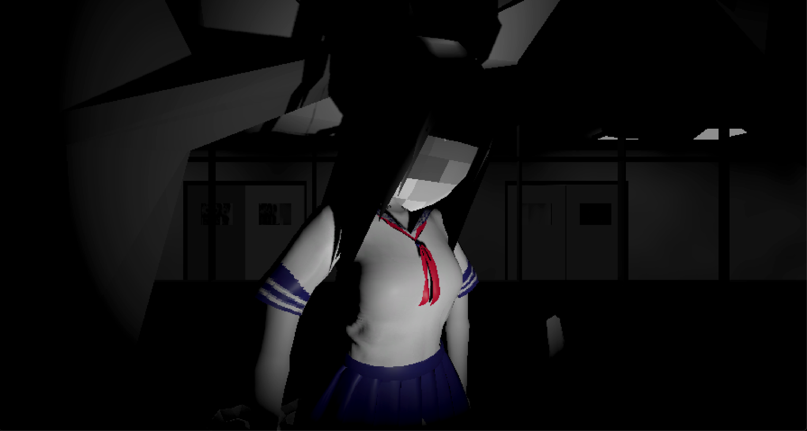
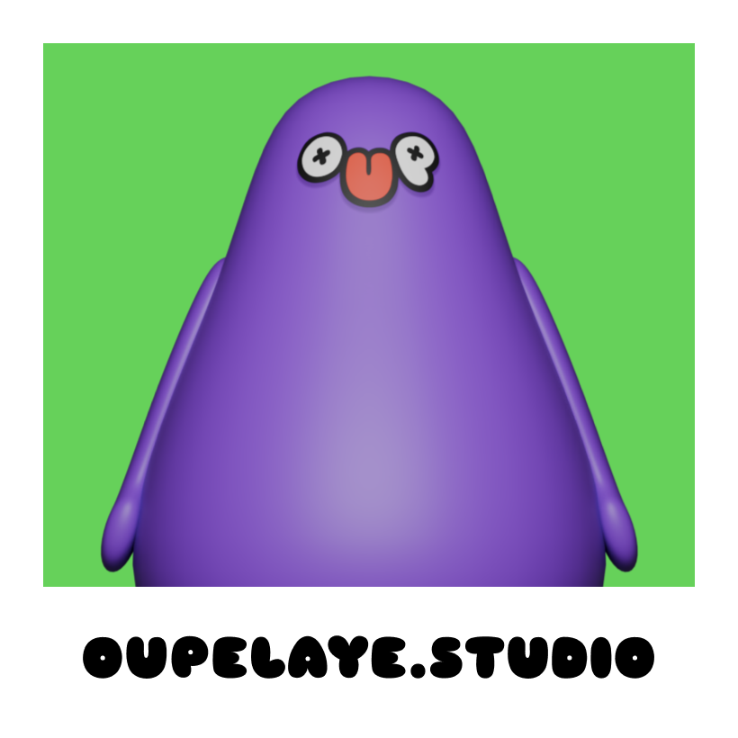

Choose one environment
A Japanese elementary school gave the story a specific identity while letting me concentrate production on a single reusable location.
Learning to build as a solo developer by turning an ordinary cleaning shift into a compact exercise in suspense.

A first-person cozy horror game about cleaning a Japanese elementary school while something unsettling waits in the dark.
I entered the jam without a development background, learning Godot as I built. My strengths were art direction and 3D/2D production, so I chose the Wednesday Strangler from the jam’s prompts because the story could translate into a contained school setting, a simple task loop, and a small number of authored scares. My developer roommate helped me connect technical pieces when I got stuck, while I owned the concept, design, art, and overall build.
A Japanese elementary school gave the story a specific identity while letting me concentrate production on a single reusable location.
Cleaning provided an interaction I could realistically implement and a reason for players to revisit rooms as the tension increased.
I planned the environment around a few memorable encounters, then built the route and pacing needed to lead players toward them.
A ten-item cleaning objective gives players a clear reason to explore, return to rooms, and stay focused as the atmosphere changes.
A near-monochrome school, sparse lighting, and low-detail forms keep attention on silhouettes, doorways, and movement in the distance.
Purple collectibles and UI stand apart from the grayscale world, giving the player a reliable visual target without dissolving the unease.
Classrooms and washrooms are recognizable enough to navigate immediately, but their empty desks, deep shadows, and hard fluorescent light turn routine exploration into anticipation.


The cleaning loop creates a predictable cadence. A sudden close encounter interrupts that cadence at the moment the player is trained to scan the environment for the next objective.


The complete game runs directly in a desktop browser, with a downloadable Windows build also available.
A short playtime keeps the experience concentrated around one location, one task, and one escalating emotional turn.
Early players called out the atmosphere and jumpscares, while also revealing camera-loading polish as a useful next iteration.
A released 3D browser game—and proof that I could turn my visual strengths into a complete playable experience while learning development through the work.